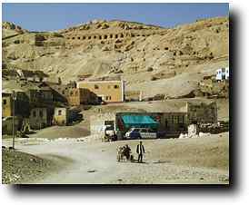
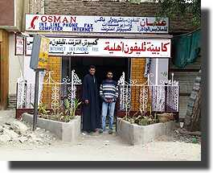

|
|||
|
I consider last year's diary (click on the link at the top of the page) to have been quite a success, as it proved that a running account of the work could be made in Luxor. A number of people have kindly asked that I repeat it. So here we go... Aim of this seasonThe 1998 season saw the end of excavation, and from now on it is study seasons, in which we get out all the finds and work out what they all mean while preparing them for publication. Thus there will not be any sudden underground discoveries and the like, but I hope that you will enjoy reading how we go about these important parts of the project. The DiaryRetrospectThis has been another great season. We've learned a lot, and made quite a few discoveries despite no new digging. We have gone a long way towards our final publication in many different areas. You will see from reading the diary that the co-operation of so many different people has produced really positive results, which is really the only way to go today. Over the next few months I'll update the rest of the TT99 site to reflect our new and revised understandings of various bits of the tomb. Thanks for reading. Technical stuffThese pages are being prepared in Luxor on a Macintosh G3 Powerbook, using images taken with an Olympus D-600L digital camera. The images are manipulated in Photoshop and Graphicconverter, and Dreamweaver is used for making the pages. I am uploading the files in the Osman office shop in Geziret el-Bairat, near the ferry. The connection from there runs at up to 3 or 4kb/sec to Cambridge and is really rather good. Costs have dropped this year, and charges are in the region of 50 piastres a minute. Last year, the ISP server they connected to was in Cairo. This year it is in Sohag, and it is said that there will be one in Luxor in the New Year. More Internet shops are appearing in Luxor--there are now about 6; for example, bookseller Aboudi has one.
All text and images © Nigel Strudwick 1999-2000 |
|||
 The Dig Diary 1999
The Dig Diary 1999© Nigel Strudwick 1997-2016